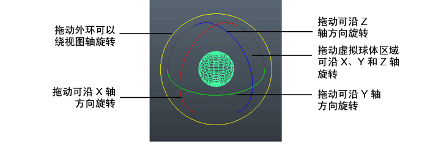

旋转对象或组件将更改其方向。旋转围绕对象枢轴进行。如果选择了多个对象，则根据其公用枢轴点旋转，这是添加到当前选择（关键对象）的最后一个对象。对于组件，枢轴点位于所有选定组件的中心。
旋转对象或组件
- 选择一个或多个对象或组件。
- 单击工具箱(Tool Box)中的“旋转工具”(Rotate Tool)图标
 ，或按 E 键。
，或按 E 键。
如果要先更改旋转工具(Rotate Tool)的设置，请双击其图标，以便在“工具设置”(Tool Settings)面板中显示其选项。
- 通过以下方法使用旋转操纵器，可以旋转选定的对象：

- 拖动各个环可以绕不同的轴旋转。
- 拖动蓝色外环在屏幕空间中旋转，以朝向摄影机。旋转轴将会更改，具体取决于摄影机的角度。
- 在环之间的灰色区域中拖动，可以围绕任意轴自由旋转。
注： “旋转工具”(Rotate Tool)设置中的“自由旋转”(Free Rotate)必须处于启用状态（默认设置），才能执行此操作。
提示： 按住 E 键并单击对象，可显示“旋转工具”(Rotate Tool)的标记菜单。该菜单包含旋转工具(Rotate Tool)的“工具设置”(Tool Settings)中可用的相同选项。
此外，还可以使用“组合式移动/旋转/缩放”(Combined Move/Rotate/Scale)操纵器旋转对象或组件。
若要使用精确值进行旋转，请参见使用精确值移动、旋转和缩放